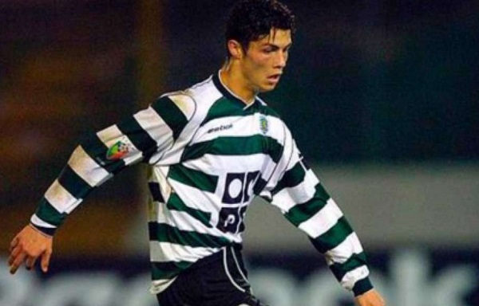
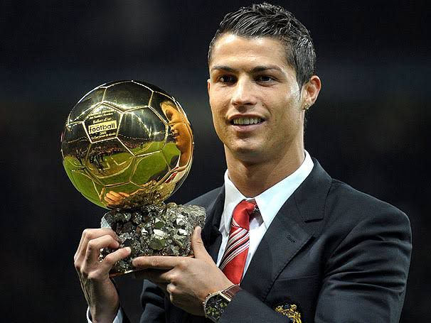
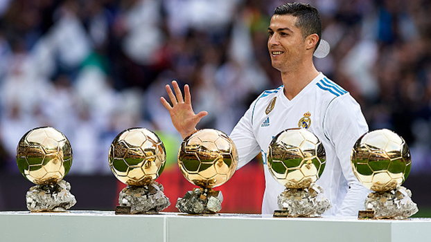
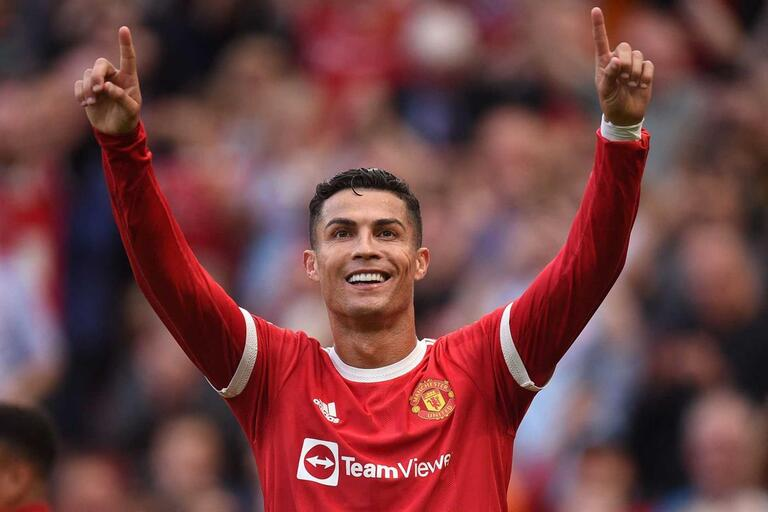

Cristiano Ronaldo dos Santos Aveiro OIH. GOIH. ComM (Funchal, 5 de fevereiro de 1985) é um futebolista português que atua como extremo-esquerdo ou ponta de lança. ... Ganhou três vezes o prêmio de Melhor Jogador da UEFA na Europa e uma vez o prêmio de Melhor Jogador de Clubes da UEFA.
O Primeiro Time

Ronaldo começou a sua carreira nas categorias de base do Clube de Futebol Andorinha de Santo António. Em 1995, foi para o Clube Desportivo Nacional e o seu sucesso com a equipa levou-o a assinar com o Sporting Clube de Portugal por duas temporadas.
Suas Bolas de Ouro


Ele consegui sua primeira Bola De Ouro jogando pelo Manchester United
E a quinta a até então sua ultima Bola De Ouro conquistada foi jogando pelo Real Madrid
Time Atual

Antes jogando pela juventos agora Retornou ao time que lhe Revelou fortemente para o futebol profissional, Manchester United